What is multiScaleR?
multiScaleR estimates the spatial scale at which
landscape variables influence ecological responses measured at field
survey locations. Rather than testing a fixed set of buffer radii, the
package fits a distance-weighted kernel function to the landscape data
and estimates the kernel width, σ (sigma), directly as a parameter of
your regression model. The result is a scale-of-effect estimate with a
standard error and confidence interval, returned alongside the familiar
regression coefficients.
This guide walks through a minimal working example to get you up and
running. For conceptual background, full model-selection workflows,
alternative kernel functions, and integration with
unmarked, see
vignette("multiScaleR_Guide", package = "multiScaleR"). For
guidance on spatial projection and clamping, see
vignette("spatial_projection_clamping", package = "multiScaleR").
For explicit derived covariates such as edge density, landscape shape
index, and Shannon diversity, see
vignette("landscape_metric_covariates", package = "multiScaleR").
The Core Workflow
Every multiScaleR analysis follows four steps:
-
Prepare inputs with
kernel_prep(): extracts distance-weighted raster values at each sample point and stores the information needed for optimization. -
Fit an initial model: use any supported regression
function (
glm,lme4,gls,pscl::zeroinfl,unmarked, etc.) with the kernel-weighted covariate values from step 1. -
Optimize scales of effect with
multiScale_optim(): simultaneously estimates σ for each spatial covariate and updates regression coefficients by maximum likelihood. -
Examine and visualize results:
summary(),plot(),plot_marginal_effects(),profile_sigma(), andkernel_scale.raster().
A Complete Example
Load the package and data
multiScaleR ships with a simulated data set of Poisson
counts at 100 survey locations and three landscape raster layers.
data("landscape_counts")
dat <- landscape_counts
data("surv_pts")
pts <- vect(surv_pts)
land_rast <- rast(pkg_extdata("landscape.tif"))The landscape_counts data frame contains counts and a
site-level covariate (site). The raster stack has three
layers: land1 (binary habitat), land2
(continuous), and land3 (continuous). Counts were simulated
with land1 (σ = 250 m, β = −0.5) and land2 (σ
= 500 m, β = 0.7) as true predictors; land3 has no
effect.
plot(land_rast)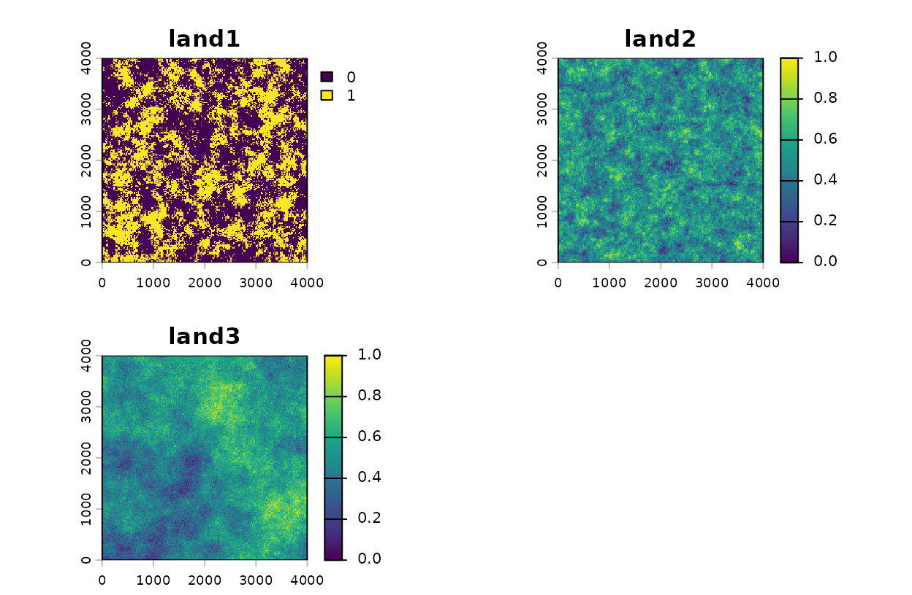
Landscape rasters with survey locations.
plot(land_rast$land1, main = "land1 with survey points")
points(pts, pch = 19, cex = 0.6, col = 'red')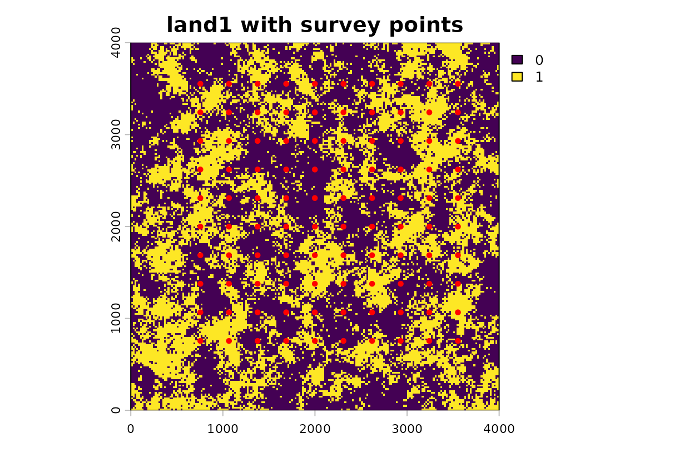
Landscape rasters with survey locations.
Prepare inputs with kernel_prep()
If observations span years with different land-cover maps, use
kernel_prep_by_group() to assign each observation its
year’s map and estimate one pooled relationship. See
vignette("year-specific-rasters", package = "multiScaleR")
for a complete example.
kernel_prep() extracts raster values within
max_D meters of each survey point and computes initial
distance-weighted covariate values. Set max_D to a value
that comfortably exceeds the scale of effect you expect. If optimization
later warns that σ is near max_D, re-run
kernel_prep() with a larger value.
kernel_inputs <- kernel_prep(
pts = pts,
raster_stack = land_rast,
max_D = 1700,
kernel = "gaussian",
verbose = FALSE
)Combine the kernel-weighted covariate values with the response data:
df <- data.frame(dat, kernel_inputs$kernel_dat)Fit an initial model
Fit the regression model you intend to optimize. The formula and
family you specify here are inherited by
multiScale_optim(), so get the model structure right before
optimizing. The coefficient values at this stage are only starting
values.
Optimize scales of effect
multiScale_optim() searches over σ values for each
raster layer while simultaneously updating regression coefficients to
maximize the model likelihood. Parallelization with n_cores
can speed up expensive refits, but requires additional memory. Requests
exceeding the estimated RAM-based worker limit now stop before screened
starts or worker creation, rather than merely warning. Use
n_cores = 1 for serial execution. For kernel-only inputs,
you can also rebuild the original kernel_prep() call with
bin = TRUE, store_cell_data = FALSE and recheck the
estimate. Landscape and surface metrics cannot use this lean mode.
# The fitted model contributes to the payload copied to workers.
ram <- estimate_multiscale_ram(kernel_inputs, fitted_mod = mod, n_cores = 3)
print(ram)
ram$component_bytesThe guard does not automatically reduce the requested count.
Recommendations are estimates, not guarantees of sufficient memory,
including when the limit is one. If RAM detection or estimation fails,
the guard does not block the run. See the memory guidance in
vignette("multiScaleR_Guide", package = "multiScaleR").
opt <- multiScaleR::multiScale_optim(fitted_mod = mod,
kernel_inputs = kernel_inputs)If optimization is sensitive to the initial σ values, use the
screened start strategy. This first scouts a small set of σ candidates,
then launches one full optimization from the best candidate. It is most
helpful when models have multiple landscape covariates, weak scale
signal, or evidence that a single starting value is settling on a local
optimum. The marginal σ scans are serial, but the short screening
attempts also use n_cores when you request parallel
optimization. On Windows, that means screened starts use PSOCK workers
in the same way as the full optimization, so the same
refit_fn serialization advice applies.
set.seed(1)
opt_screen <- multiScaleR::multiScale_optim(
fitted_mod = mod,
kernel_inputs = kernel_inputs,
start_strategy = "screen",
screen_n_sigma = 4,
screen_n_jitter = 2,
screen_maxit = 5
)Examine results
summary() reports the estimated σ and its standard error
and 95% confidence interval for each spatial covariate, followed by the
standard regression summary. By default, confidence intervals are
computed using the delta method. For more reliable bounds when the
likelihood surface is asymmetric (e.g., when σ is near
max_D or sample size is small), pass
profile = TRUE.
summary(opt)
#>
#> Call:
#> multiScale_optim(fitted_mod = mod0_2, kernel_inputs = kernel_inputs,
#> verbose = FALSE)
#>
#>
#> Kernel used:
#> gaussian
#>
#> ***** Optimized Scale of Effect *****
#>
#> Mean SE 2.5% 97.5%
#> land1 238.4880 33.12452 172.7364 304.2397
#> land2 499.5767 47.47055 405.3484 593.8050
#>
#>
#> ====================================
#>
#> ***** Optimized Scale of Effect -- Distance *****
#> Scale distances (map units) at 90%, two definitions.
#>
#> 2D, radius of the circle for the ideal untruncated kernel (selected):
#> Mean 2.5% 97.5%
#> land1 511.79 370.69 652.89
#> land2 1072.07 869.86 1274.29
#>
#> 1D, along a line through the point (comparison):
#> Mean 2.5% 97.5%
#> land1 392.28 284.13 500.43
#> land2 821.73 666.74 976.72
#>
#>
#> ====================================
#>
#> ***** Fitted Model Summary *****
#>
#>
#> Call:
#> glm(formula = counts ~ site + land1 + land2, family = poisson(),
#> data = data)
#>
#> Coefficients:
#> Estimate Std. Error z value Pr(>|z|)
#> (Intercept) 0.39291 0.09098 4.319 1.57e-05 ***
#> site 0.17482 0.08246 2.120 0.034 *
#> land1 -0.48628 0.07923 -6.138 8.38e-10 ***
#> land2 0.62571 0.07245 8.636 < 2e-16 ***
#> ---
#> Signif. codes: 0 '***' 0.001 '**' 0.01 '*' 0.05 '.' 0.1 ' ' 1
#>
#> (Dispersion parameter for poisson family taken to be 1)
#>
#> Null deviance: 224.24 on 99 degrees of freedom
#> Residual deviance: 109.57 on 96 degrees of freedom
#> AIC: 314.25
#>
#> Number of Fisher Scoring iterations: 5
#>
#>
#>
#> ***** Follow-up recommendation *****
#> Recommended `max_D`: 1700
#> Recommended starting `sigma` values:
#> land1 land2
#> 238.4880 499.5767
#>
#> Action:
#> Use the optimized parameters as efficient starting values if refitting.The true simulated values (σ = 250 m for land1, σ = 500
m for land2) should fall within the reported confidence
intervals.
Visualize kernel decay and covariate effects
plot() shows cell weight decreasing with distance. Its
vertical line now marks the radius containing 90% of ideal kernel weight
on a plane (2D), matching kernel_dist(opt) and the selected
summary(opt)$opt_dist. For a Gaussian kernel this radius is
about 2.15 sigma, not sigma itself. The curve is not the total weight in
concentric rings, so the area under it to the marker is not 90%. The
realized share can differ when max_D, raster edges, missing
cells, or cell geometry restrict the landscape.
Changed reporting default: Versions through 0.7.3
used line-based (1D) markers. Use dimension = "1d" in
plot(), plot_kernel(),
kernel_dist(), or summary() to restore that
definition (about 1.65 sigma at 90% for a Gaussian). This does not
change the fitted model. Summaries retain both tables as
opt_dist_1d and opt_dist_2d;
opt_dist and opt_distance follow the selected
dimension. Stored optimization diagnostics and computational cutoffs
remain on their historical 1D definition.
plot(opt)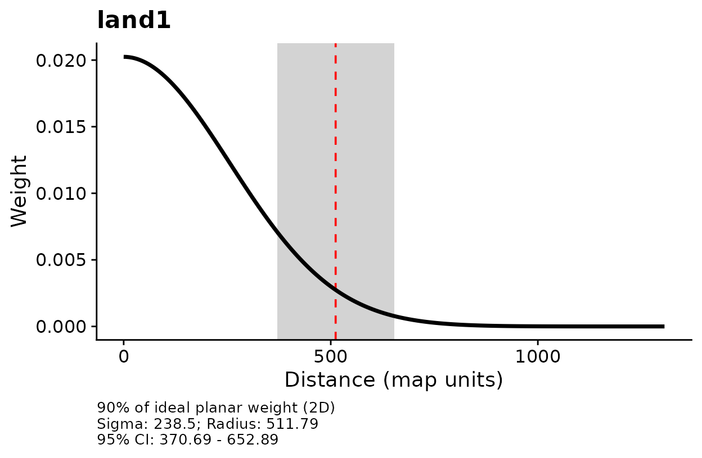
Distance-decay of kernel weight for each covariate.
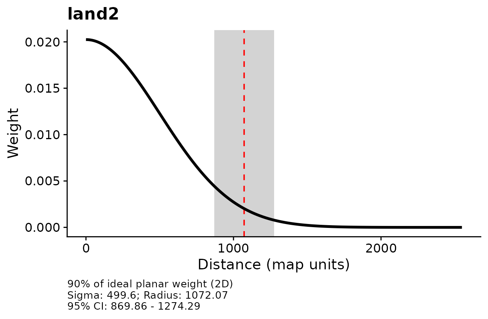
Distance-decay of kernel weight for each covariate.
# Keep the original distance definition when reproducing older reports.
plot(opt, dimension = "1d")
kernel_dist(opt, dimension = "1d")
summary(opt, dimension = "1d")plot_marginal_effects() shows the estimated effect of
each covariate on the response, holding all other covariates at their
mean values.
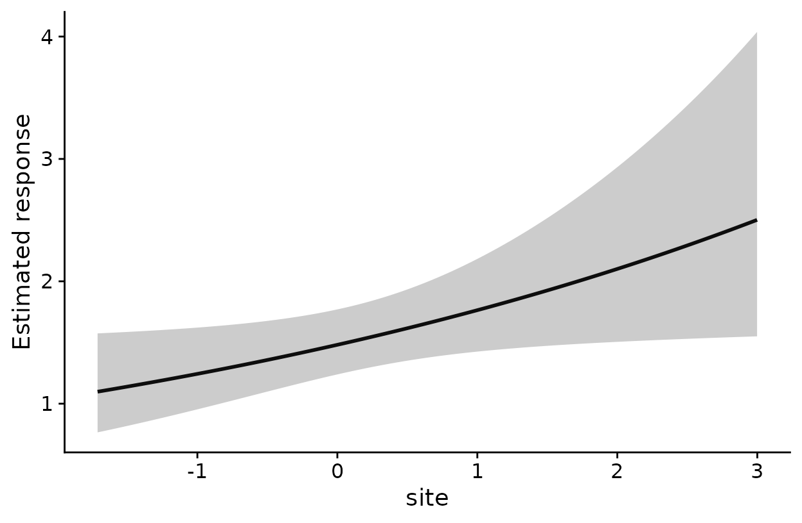
Marginal effects of each spatial covariate on counts.
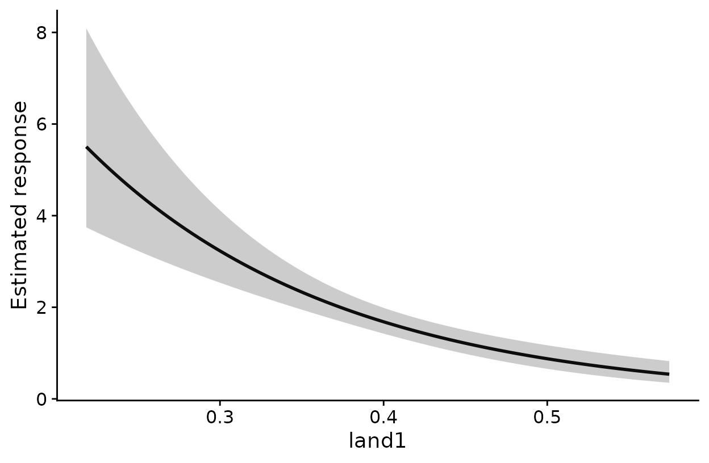
Marginal effects of each spatial covariate on counts.
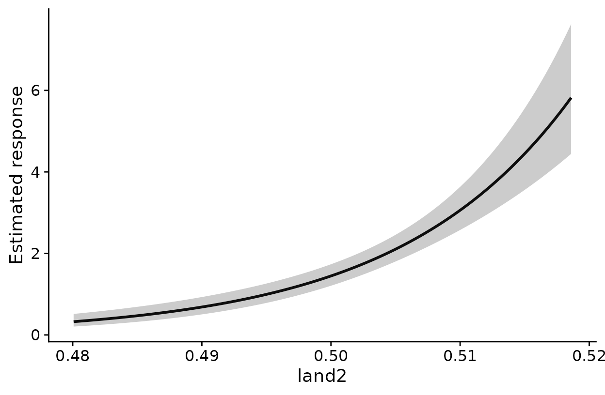
Marginal effects of each spatial covariate on counts.
Diagnose the likelihood surface
profile_sigma() evaluates AICc (or log-likelihood)
across the sigma search range for each covariate, holding all other
sigmas at their optimized values. A clear trough centered near the
optimized sigma confirms a well-identified scale of effect; a flat or
monotone profile indicates the data do not strongly constrain sigma for
that variable.
You can parallelize this step with n_cores. A practical
rule is to use up to the number of scaled surfaces (spatial covariates),
which is often the most efficient setting when computer resources
permit.
n_profile_cores <- min(length(opt$scale_est$Mean),
max(1L, parallel::detectCores(logical = FALSE)))
prof <- vignette_cache$quickstart$prof
plot(prof)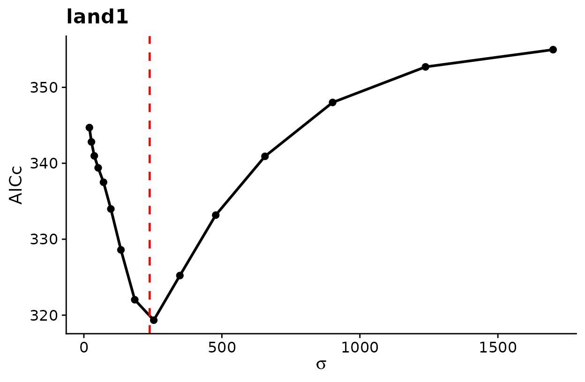
AICc profile across sigma. Red dashed line marks optimized sigma.
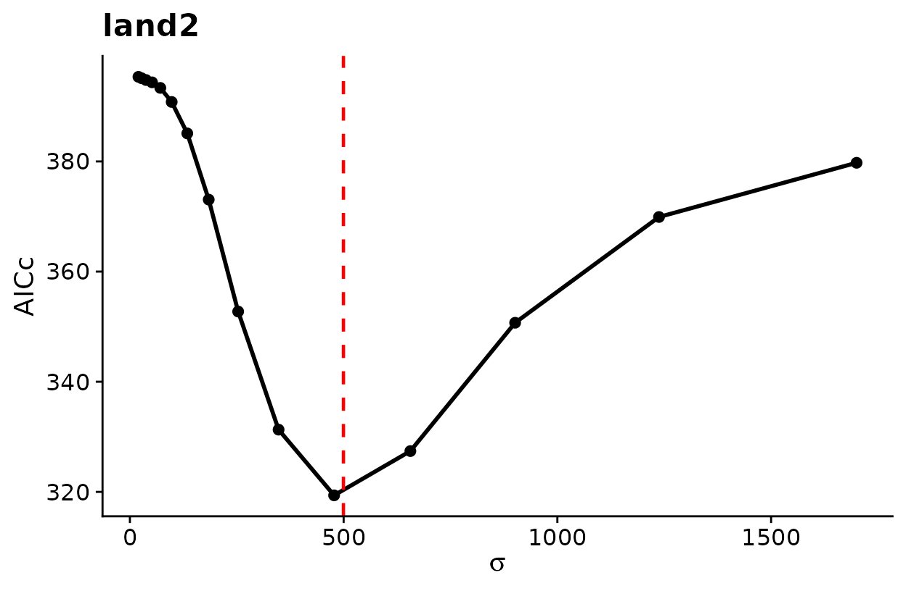
AICc profile across sigma. Red dashed line marks optimized sigma.
For a deeper explanation of how to interpret the profile and when to
prefer profile-likelihood CIs over delta-method CIs, see
vignette("multiScaleR_Guide", package = "multiScaleR").
Project the fitted model to the landscape
kernel_scale.raster() applies the optimized kernel to
the full raster extent and, with scale_center = TRUE,
standardizes the result using the same centering and scaling used during
model fitting. The output can be passed directly to
terra::predict().
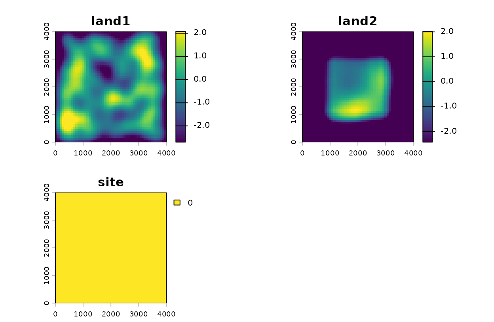
Kernel-smoothed raster layers at optimized scales.
pred <- terra::unwrap(vignette_cache$quickstart$pred)
plot(pred, main = "Predicted counts")
plot(surv_pts, add = T, col = 'red')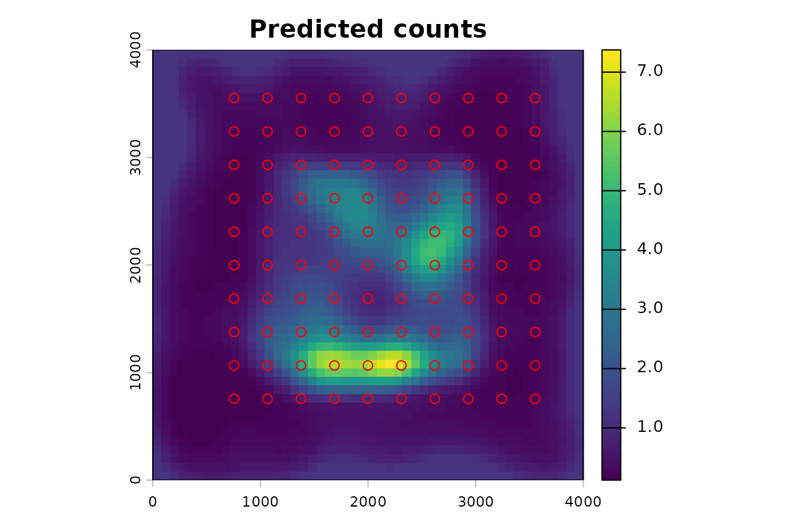
Predicted counts across the landscape.
The nature of this toy example and simulated data is such that
predicted counts go to zero at low levels of land2. In this
example that is most of the border region. This results is simply an
artifact of the small landscape and large scale of effect.
Quick-Reference: Full Workflow
library(multiScaleR)
library(terra)
# 1. Load data
data("landscape_counts"); data("surv_pts")
pts <- vect(surv_pts)
land_rast <- rast(pkg_extdata("landscape.tif"))
# 2. Prepare kernel inputs
kernel_inputs <- kernel_prep(pts = pts, raster_stack = land_rast,
max_D = 1700, kernel = "gaussian")
# 3. Fit initial model
df <- data.frame(landscape_counts, kernel_inputs$kernel_dat)
mod <- glm(counts ~ land1 + land2, family = poisson(), data = df)
# 4. Optimize scales of effect
opt <- multiScale_optim(fitted_mod = mod, kernel_inputs = kernel_inputs,
n_cores = 2)
# Optional: screen candidate starts before the full optimization when a model
# is sensitive to starting values.
set.seed(1)
opt_screen <- multiScale_optim(fitted_mod = mod,
kernel_inputs = kernel_inputs,
start_strategy = "screen",
screen_n_sigma = 4,
screen_n_jitter = 2,
screen_maxit = 5)
# 5. Summarize and visualize
summary(opt) # sigma estimates + regression table
summary(opt, profile = TRUE) # profile-likelihood CIs (slower)
plot(opt) # kernel decay curves
plot_marginal_effects(opt) # covariate effect plots
prof <- profile_sigma(opt) # AICc/LL surface across sigma space
plot(prof) # plot profile with optimized sigma marked
# Optional: profile in parallel. Using up to the number of scaled surfaces
# is often the most efficient when resources allow.
n_profile_cores <- min(length(opt$scale_est$Mean),
max(1L, parallel::detectCores(logical = FALSE)))
prof_parallel <- profile_sigma(opt, n_cores = n_profile_cores)
# 6. Project to landscape
r_scaled <- kernel_scale.raster(land_rast, multiScaleR = opt,
scale_center = TRUE, clamp = TRUE)
terra::predict(r_scaled, opt$opt_mod, type = "response")Learn More
Full user guide:
vignette("multiScaleR_Guide", package = "multiScaleR")covers kernel selection, model comparison with AIC/BIC, optimization withunmarked, zero-inflated models, and simulation tools.Spatial projection and clamping:
vignette("spatial_projection_clamping", package = "multiScaleR")explains what happens when model predictions are extended beyond the sampled environmental range and howclampandpct_mxcontrol that behavior.